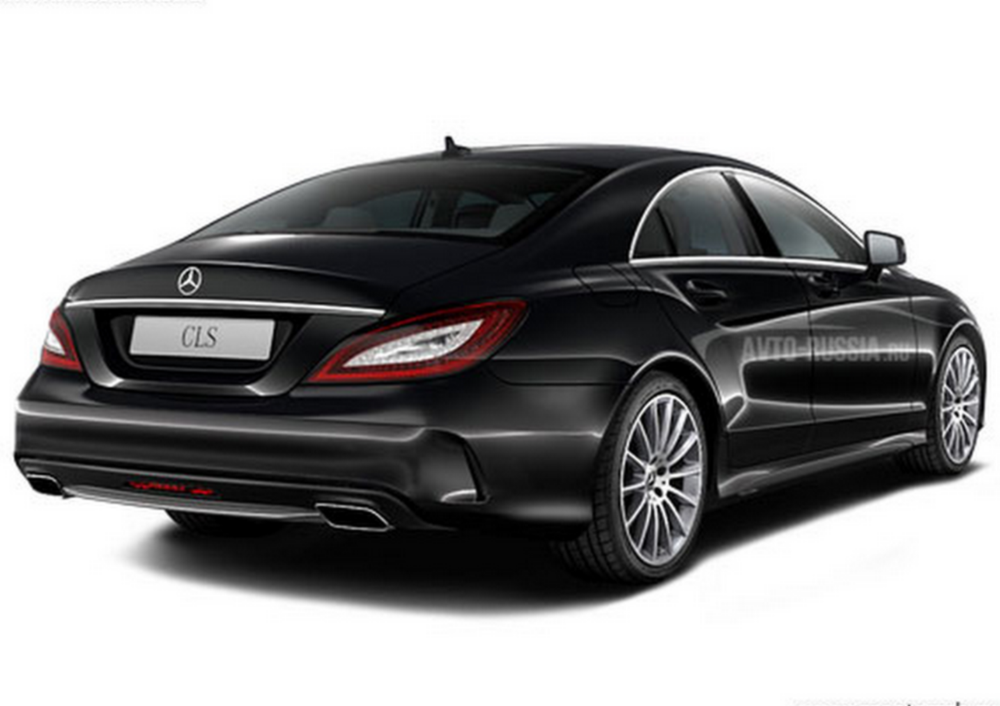

Mercedes cls 63 
The Mercedes-Benz CLS 63 AMG is a luxury performance car with a powerful V8 biturbo engine (up to 603 hp).
It accelerates from 0 to 100 km/h in about 3.5 seconds.
The design features a sleek “four-door coupe” style, and the interior offers advanced technology and premium materials.
It also includes 4MATIC all-wheel drive for superior handling.

\
Tezlashish: Brabus 800, 0-100 km/soatni 4.1 soniyada bosib o'tadi
Motor: 4.0 litrlik V8 biturbo, 800 ot kuchi (588 kVt), maksimal tezlik 240 km/soat.
Xususiyatlar: Brabus modifikatsiyalari, avtomobilning tashqi ko'rinishini yanada sportiv va jozibali qiladi; o'ziga xos aerodinamik qoplamalar, maxsus g'ildiraklar va xususiy ichki dizayn.
Narxi: Brabus Gelik narxi original G-Class modellari bilan solishtirganda ancha yuqori, ko'pincha $200,000 dan ortiq bo'lishi mumkin.